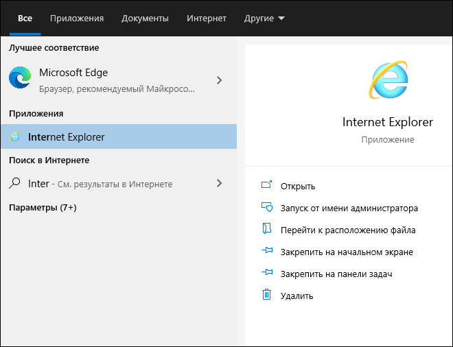

Запуск с помощью строки поиска
Вы можете запустить Internet Explorer с помощью строки поиска.
-
В левом нижнем углу экрана в строке поиска рядом со значком
 (Пуск) и
начните вводить Internet Explorer.
В меню Пуск отобразится соответствующий пункт (см. изображение ниже).
(Пуск) и
начните вводить Internet Explorer.
В меню Пуск отобразится соответствующий пункт (см. изображение ниже). -
Щёлкните на пункте Internet Explorer.
Окно браузера отобразится на рабочем столе.